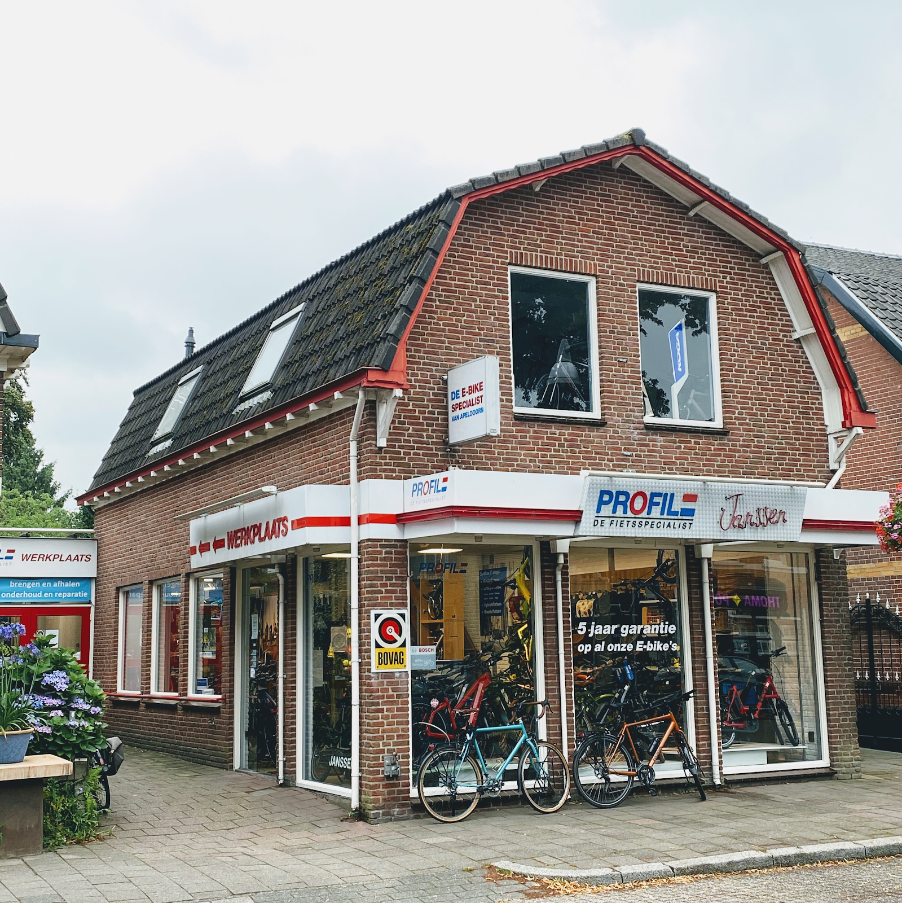
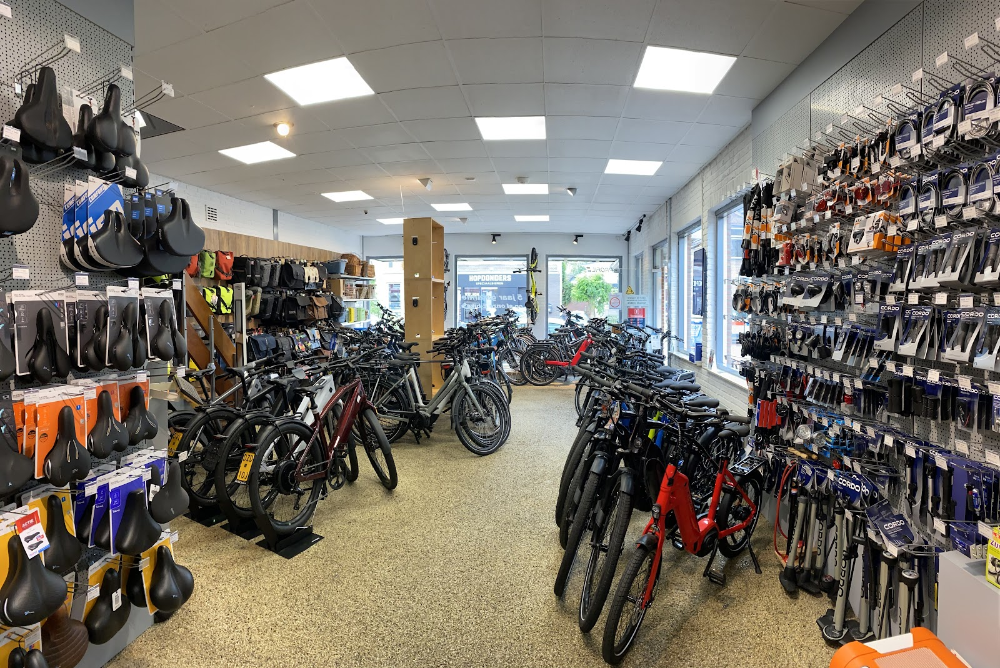
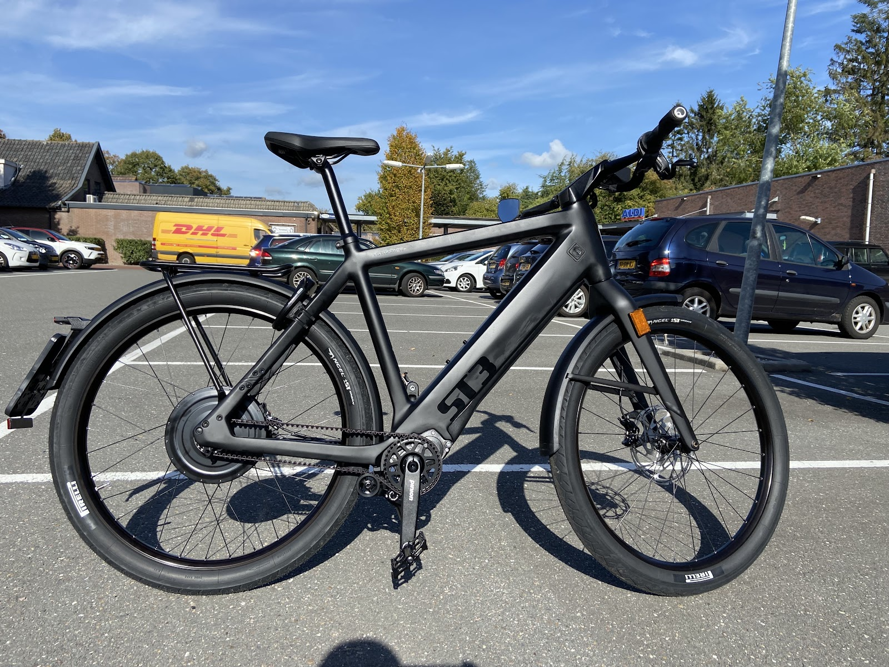
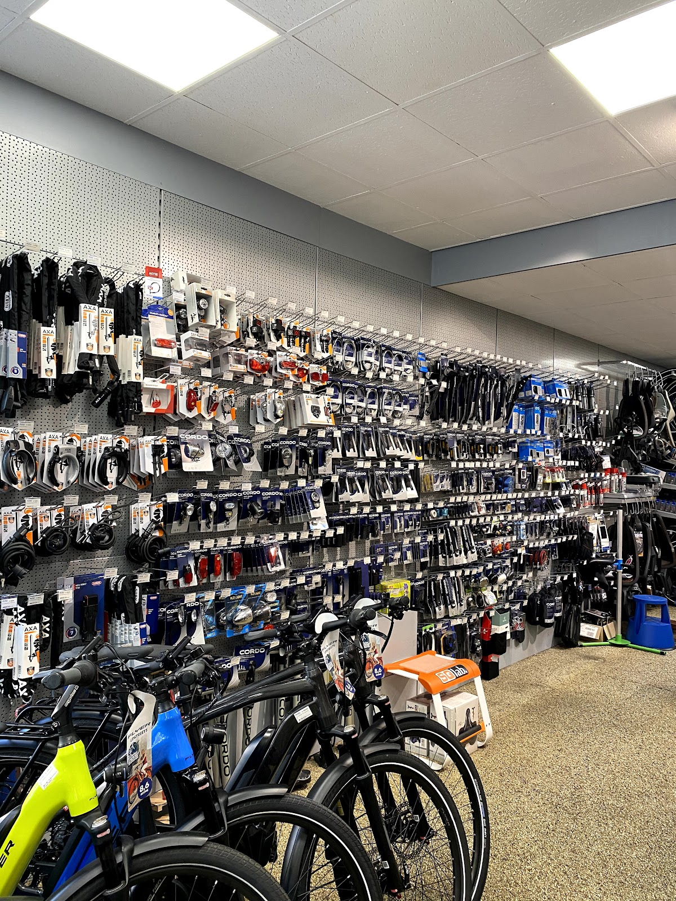
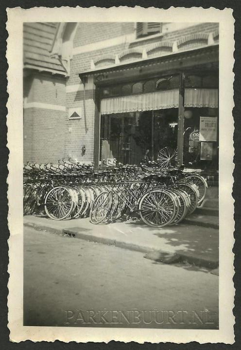
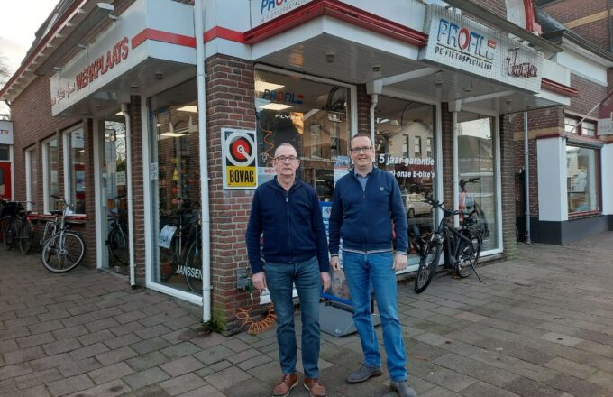

Koninginnelaan 54, Apeldoorn
Sinds 1924 de fietsspecialist van Apeldoorn.
Dé e-bikespecialist van de regio, met vakkundig advies op maat en een eigen werkplaats. Riese & Müller, Kalkhoff, i:SY, Gazelle en meer: kom kijken, of app ons gerust voor een proefrit.
4,5 van 5 uit 93 Google-reviews

Herinneringen maak je samen.
Premium merken, naast elkaar in de showroom.
Zo kunt u ze vergelijken en zelf voelen hoe ze rijden. Twijfelt u tussen twee modellen? Wij helpen u kiezen.

- Riese & Müller German Precision Craftsmanship
- Kalkhoff German Everyday Excellence
- i:SY The Original Compact e-Bike
- Schindelhauer Berlin Urban Style
- Gazelle E-bikes en fietsen
Verder in de winkel: Cortina, Brompton, Koga, Flyer, Sparta, Raleigh, Tern, Dutch ID en de Accell Outlet. Ook voor fietsendragers bent u bij ons aan het juiste adres.

Welke fiets past bij u?
Naar het werk, met de boodschappen of de kinderen achterop, of compact in de trein. Elektrisch is er voor bijna elke rit een passende fiets.
- Stadsfietsen
- Compactfietsen
- Speed pedelecs
- Hybride fietsen
- Longtails
- Moederfietsen
- Vouwfietsen
- Voeten aan de grond
Daarnaast occasions, aanbiedingen en een webshop met accessoires.

Een eigen werkplaats, naast de winkel.
Uw fiets wordt rijklaar gemaakt door onze eigen monteurs, en voor onderhoud en reparatie kunt u bij dezelfde mensen terecht. Plan een servicebeurt in, dan staat er tijd voor u klaar.
- Dinsdag t/m vrijdag
- 09:00 tot 17:00
- Zaterdag
- Gesloten
- Zondag en maandag
- Gesloten

Opgericht in 1924. Nog altijd hier.
Al ruim honderd jaar helpen we Apeldoorn op de fiets. De fietsen zijn veranderd, de manier van werken niet: u krijgt eerlijk advies, een fiets die echt bij u past en service waar u na de aankoop op kunt rekenen.

"Service zoals je die tegenwoordig nog maar zelden ziet."
4,5 van 5, uit 93 Google-reviews
"Graag sluit ik mij volledig aan bij wat in veel reviews al wordt gezegd: service zoals je die tegenwoordig nog maar zelden ziet. Heb je een fiets nodig? Mijn advies is simpel: ga naar deze winkel!"
"Binnen de garantietermijn de standaard los/kapot. Wij waren inmiddels verhuisd 60 km verder maar dit was geen probleem. Fiets opgehaald en leenfiets gekregen. De volgende dag was mijn fiets al weer gemaakt en werd ook weer teruggebracht. Ik ben zeer tevreden."
"Perfect geholpen bij de koop van een speed pedelec. Zeer goede prijs gekregen, fiets werd snel rijklaar gemaakt. Uitstekende service. Het smalle en harde zadel werd kosteloos vervangen naar een hoogwaardig zadel naar keuze. Laagdrempelige medewerkers met humor."
"Zeer goed bedrijf, duidelijke afspraken, niks te veel, heel blij met onze fietsen."
Werk je graag met fietsen? Kom ons team versterken.
We zoeken full- en parttime monteurs en een allround medewerker. Voor de parttime functies zijn de uren in overleg.
Kom langs aan de Koninginnelaan.
Koninginnelaan 547315 BT Apeldoorn
055 521 2582 (ook WhatsApp)
info@janssenfietsen.nl
Winkel
- Maandag
- Gesloten
- Dinsdag
- 09:00 - 17:30
- Woensdag
- 09:00 - 17:30
- Donderdag
- 09:00 - 17:30
- Vrijdag
- 09:00 - 17:30
- Zaterdag
- 09:00 - 17:00
- Zondag
- Gesloten
Werkplaats
- Maandag
- Gesloten
- Dinsdag
- 09:00 - 17:00
- Woensdag
- 09:00 - 17:00
- Donderdag
- 09:00 - 17:00
- Vrijdag
- 09:00 - 17:00
- Zaterdag
- Gesloten
- Zondag
- Gesloten